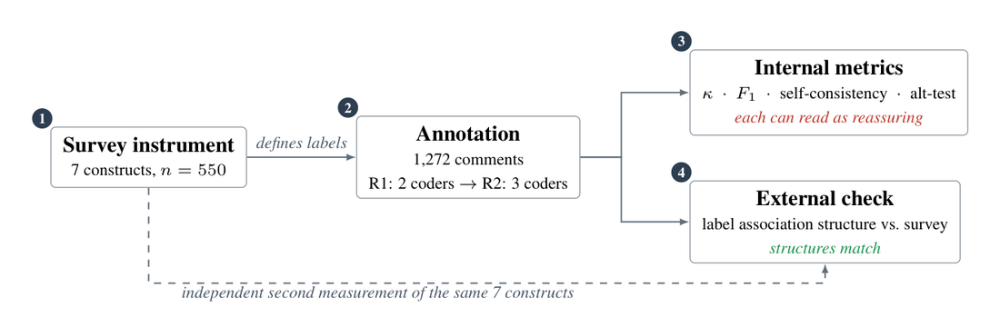
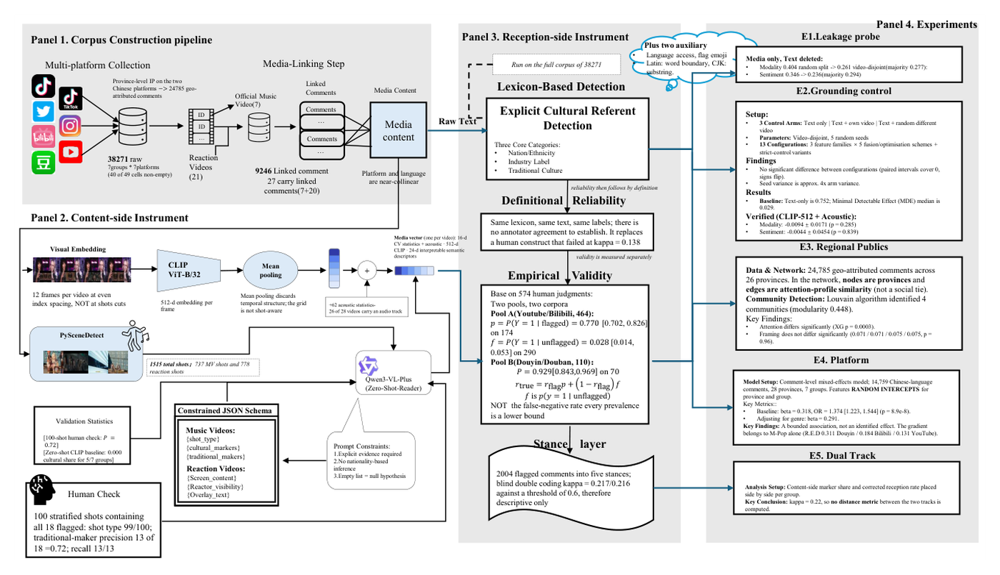
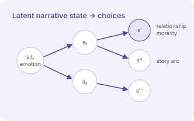
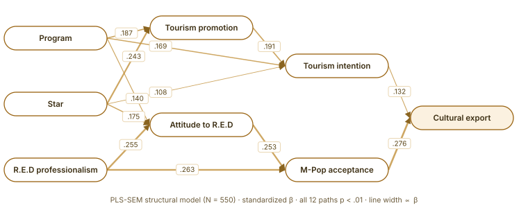
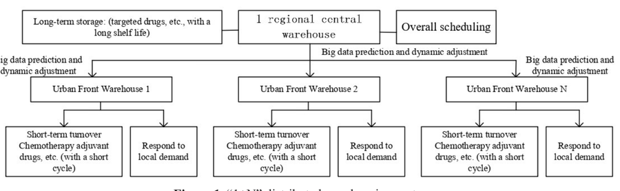
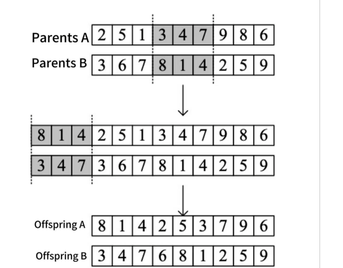

Xuejun (Jack) Cheng程学俊
Master's Student @ Monash University · Incoming M.S. CS @ Georgia Tech
Seeking PhD opportunitiesHi! I am Xuejun (Jack) Cheng, currently pursuing a Master's degree in Artificial Intelligence at Monash University. I have also been admitted to the Online Master of Science in Computer Science (OMSCS) program at the Georgia Institute of Technology, where I plan to specialize in Machine Learning (expected start: Spring 2027).
At Monash, I work with Prof. Wong Wai Peng and A/Prof. Julian Garcia. I am also working with Prof. Wei Shen (沈伟) at Shanghai Jiao Tong University's KoGuan School of Law on a paper about AI in finance. Previously, I studied under Rahul Sen at Coventry University.
My research interests lie in Natural Language Processing, Computational Social Science, and World Models, particularly video-based predictive representations, temporal dynamics, and multimodal intelligence.
I am currently seeking PhD opportunities in these areas and would be happy to connect with potential supervisors and collaborators.
Research Interests
News
- UpcomingStarting the OMSCS program (M.S. in Computer Science, Machine Learning specialization) at Georgia Tech.
- My first-author paper High Agreement, Wrong Construct is under review at ACL Rolling Review.
- Presented our star IP and cultural export work at GAAC 2026.
- Attended the NUS–MSRA AI Summer School in Singapore.
- Screen and Speech, with Prof. Wong Wai Peng, is under review at ICWSM 2027.
Research & Publications
-

High Agreement, Wrong Construct: What Annotation Quality Metrics Actually CertifyUnder reviewACL Rolling Review, Oct 2026Shows that inter-annotator agreement, classifier F1 and LLM consistency tests can all look strong while the model measures a different construct. Evaluated across 1,272 multilingual comments and seven theory-derived constructs, with an independent 550-participant survey as external evidence. -

Screen and Speech: Aggregated Media Features Do Not Predict Fandom Discourse, but Venue Covaries with ItUnder reviewICWSM 2027A cross-platform corpus of 38,271 comments with leakage-safe multimodal evaluation (video-disjoint splits, wrong-video controls, CLIP, mixed-effects models). Media features add no predictive gain once leakage is controlled, while platform stays associated with cultural framing. -

Emotion-Aware Narrative World ModelOngoingIndependent project · Detroit: Become HumanA world model for long-horizon decision-making over emotional state, relationships, morality and story progression, with multi-objective planning that values emotionally and narratively meaningful choices rather than a single "best ending". -

From Star IP to Cultural Export: Integrating PLS-SEM and Construct-Aligned Multilingual Comment AnalyticsConferenceGBA AI Alliance Conference (GAAC 2026) · DOI pendingCombines a 550-response PLS-SEM survey with XLM-R-based multilingual comment analysis to study how star IP drives tourism promotion and cultural export. -
Future Legal Regulation of AI Agent Applications in Financial MarketsPreprintSSRN, 2025 · presented at the UNU Macau AI Conference 2025
-

Optimizing the Logistics and Warehousing Model of Anti-Cancer Drugs for Cancer PatientsJournalPsycho-Oncologie, 20(6), 2026 -

Simulation Study on Optimization of Delivery Path for Community Group BuyingJournalFrontiers in Future Transportation, 6:1671246, 2025 -
Research on the Development of New Quality Productivity Promoted by Intelligent Property Management System Based on AI TechnologyJournalSustainable Development, 14(07), 1762–1766, 2024
-
Marketing Model Innovation and Quantitative Analysis: A Case Study of Lay Zhang and the R.E.D. Girl Group on the Dual Path of Variety Shows in "Cultural Tourism Integration" and "Cultural Export"PosterJournal of Marketing Science Conference, 2025
Research Experience & Mentorship
| Institution | Faculty / Mentor | Research context |
|---|---|---|
| Monash University | A/Prof. Julian Garcia | Game theory and collective intelligence; research on whether relying on AI can make groups less intelligent |
| Monash University | Prof. Wong Wai Peng | Multimodal social media discourse (Screen and Speech, ICWSM 2027 under review) |
| Collaboration | Rena Wei Gao (ByteDance / Univ. of Melbourne) | Construct validity of LLM annotation (ARR 2026 under review) |
| Coventry University | Rahul Sen | University Research Assistant, School of Business |
| Shanghai Jiao Tong University | Prof. Wei Shen (沈伟) | KoGuan School of Law · paper in preparation on AI in finance; earlier exchange study in financial law and market regulation |
Education
- M.S. in Computer Science (OMSCS), Georgia Institute of Technology Spring 2027 – (expected) Online program · planned specialization: Machine Learning
- Master of Artificial Intelligence, Monash University Feb 2026 – present GPA 3.25/4 · Deep Learning, Planning and Automated Reasoning, Fundamentals of AI
- Exchange Program, KoGuan School of Law, Shanghai Jiao Tong University Feb – Dec 2025 Grade A · contract law, financial market regulation
- BA (Hons) Marketing, Coventry University 2021 – 2025 Upper Second Class Honours (2:1)
Summer schools, service & other experience
- NUS–MSRA AI Summer School, Singapore — Aug 2026
- AI + Quantum Winter School, Shenzhen Loop Area Institute — reproduced an LLM-based quantum circuit simulation (Jan 2026)
- ZJU–UIUC Institute Summer School — structured literature review of computer vision research, grade A (Jul 2025)
- SJTU SDG July Camp (Law and Ethics) — Jun 2025
- Reviewer, Social Work Education — 2026–present
- Student contributor, AI Academic Reviewer Skill Project (Prof. Liu's team) — 2026
- Course Representative, Faculty of IT, Monash University — 2026–present; Coventry University Students' Union — 2021–2025
- U21 Global Citizen, Universitas 21 — 2026–present
- Talks: GAAC 2026; UNU Macau AI Conference 2025
Skills
- ML / DL: Python, PyTorch (hand-implemented forward and backward passes, CNNs), scikit-learn
- NLP: fine-tuning and modifying XLM-R and mDeBERTa; multi-step LLM agent workflows
- Multimodal: CLIP feature extraction for video-linked social media data
- Methods: leakage-safe experimental design, mixed-effects models, PLS-SEM
- Languages: Mandarin (native), English (fluent)